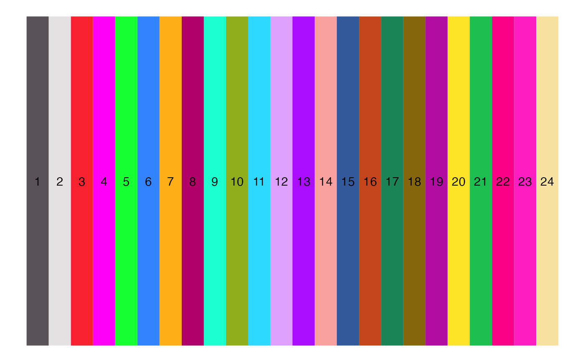

Function to return package default discrete palettes depending on number of groups plotted.
scCustomize_Palette(
num_groups,
ggplot_default_colors = FALSE,
color_seed = 123
)number of groups to be plotted. If ggplot_default_colors = FALSE then by default:
If number of levels plotted equal to 2 then colors will be NavyAndOrange().
If number of levels plotted greater than 2 but less than or equal to 36 it will use "polychrome" from DiscretePalette_scCustomize().
If greater than 36 will use "varibow" with shuffle = TRUE from DiscretePalette_scCustomize.
logical. Whether to use default ggplot hue palette or not.
random seed to use for shuffling the "varibow" palette.
vector of colors to use for plotting.
cols <- scCustomize_Palette(num_groups = 24, ggplot_default_colors = FALSE)
PalettePlot(pal= cols)
